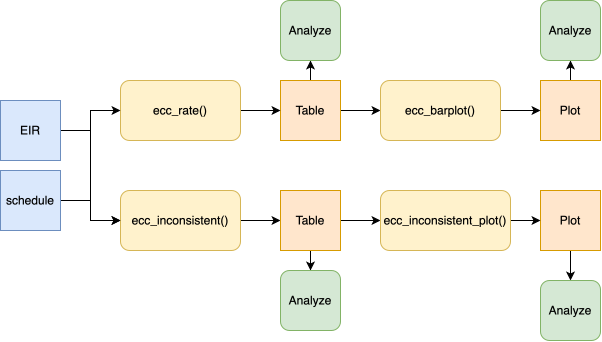
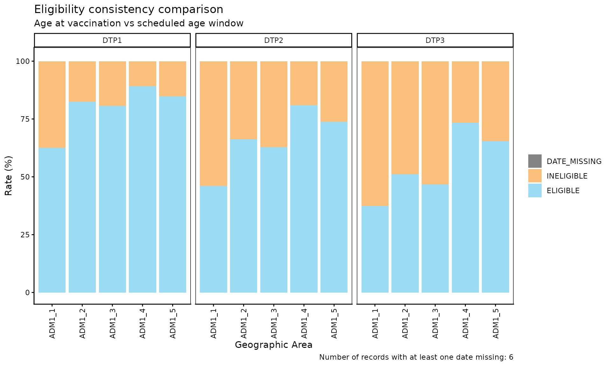
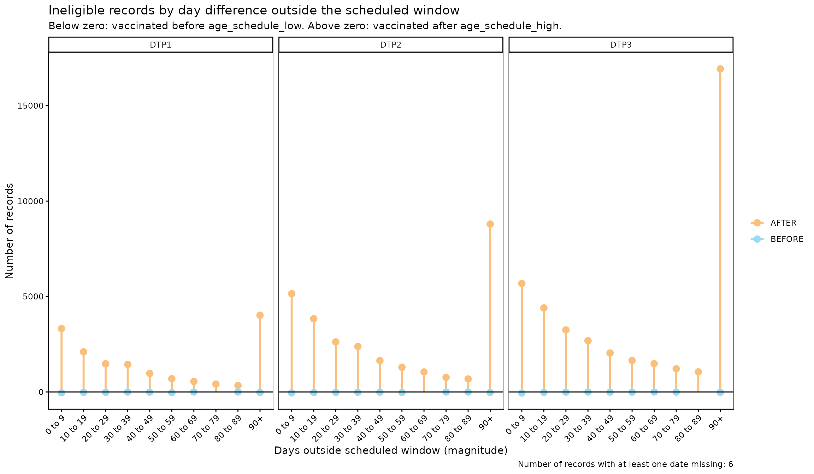

Comparación de consistencia de elegibilidad
OPS/CIM
28 de julio de 2026
Source:vignettes/articles/es/eligibility_consistency_comparison_es.Rmd
eligibility_consistency_comparison_es.RmdFundamento
Los esquemas nacionales de vacunación definen, para cada dosis, una ventana de edad objetivo durante la cual se espera que la persona sea vacunada (p. ej., la DTP1 debería administrarse entre los 54 y los 90 días de edad). Un evento de vacunación que ocurre fuera de esa ventana — demasiado temprano o demasiado tarde — indica un problema de calidad de datos o una brecha programática en la oportunidad de la prestación del servicio.
El módulo de comparación de consistencia de elegibilidad permite
identificar, cuantificar y visualizar de forma sistemática si la edad al
momento de la vacunación (date_vax - date_birth) se
encuentra dentro de la ventana de edad definida por el esquema de
vacunación (age_schedule_low,
age_schedule_high).
Nota
Todas las funciones utilizadas para los análisis de comparación de consistencia de elegibilidad dentro de PAHOabc comienzan con el prefijo
ecc_.
Advertencia
Las funciones
ecc_calculan la edad al momento de la vacunación comodate_vax - date_birth. Sidata.EIRcontiene registros dondedate_vaxocurre antes quedate_birth(es decir, una edad de vacunación negativa), esto señala un error de consistencia de fechas, no de elegibilidad. Cuando esto ocurre, las funcionesecc_emiten una advertencia que remite al módulodcc_de comparación de consistencia de fechas para identificar y resolver esos registros primero.
Glosario
Divisiones político-geográficas
A lo largo de esta viñeta se hace referencia a distintos niveles de división político-geográfica. Estos niveles son definidos por cada país o territorio y pueden recibir nombres diferentes. PAHOabc no depende de esos nombres locales; por eso, el usuario debe recodificar sus variables para ajustarlas a la estructura que utiliza el paquete.
En concreto, PAHOabc puede distinguir tres niveles administrativos que, listados del nivel superior al inferior, son: ADM0, ADM1 y ADM2.
- ADM0: El país. Este es el nivel administrativo más alto.
- ADM1: La primera subdivisión geográfica del país. ADM0 contiene varias subdivisiones ADM1.
- ADM2: La segunda subdivisión geográfica del país. Cada ADM1 contiene varias subdivisiones ADM2.
Categorías de elegibilidad
| Categoría | Significado |
|---|---|
ELIGIBLE |
La edad al momento de la vacunación está dentro de
[age_schedule_low, age_schedule_high]. |
INELIGIBLE |
La edad al momento de la vacunación está fuera de
[age_schedule_low, age_schedule_high] — vacunación
demasiado temprana o demasiado tardía. |
DATE_MISSING |
date_vax o date_birth es
NA. |
Uso
Cargar los datos
Las funciones de este módulo requieren su RNVe y un esquema de vacunación, ambos en el formato estándar de PAHOabc.
RNVe
El conjunto de datos pahoabc::pahoabc.EIR proporciona
una tabla nominal simulada con eventos individuales de vacunación de un
Registro Nominal de Vacunación electrónico (RNVe). Cada fila corresponde
a una vacunación de una persona.
pahoabc.EIR %>% head() %>% kable(caption = "Ejemplo de Registro Nominal de Vacunación electrónico")| ID | date_birth | date_vax | ADM1_residence | ADM2_residence | ADM1_occurrence | ADM2_occurrence | dose |
|---|---|---|---|---|---|---|---|
| 191997 | 2023-08-08 | 2023-12-26 | ADM1_4 | ADM2_4_35 | ADM1_4 | ADM2_4_35 | DTP2 |
| 212189 | 2023-12-20 | 2023-12-26 | ADM1_5 | ADM2_5_61 | ADM1_5 | ADM2_5_61 | BCG RN |
| 118063 | 2022-09-15 | 2023-12-26 | ADM1_2 | ADM2_2_5 | ADM1_2 | ADM2_2_5 | DTP1 |
| 118063 | 2022-09-15 | 2023-12-26 | ADM1_2 | ADM2_2_5 | ADM1_2 | ADM2_2_5 | YFV1 |
| 130751 | 2022-10-27 | 2023-12-12 | ADM1_5 | ADM2_5_55 | ADM1_5 | ADM2_5_55 | YFV1 |
| 136532 | 2021-09-21 | 2023-12-26 | ADM1_3 | ADM2_3_12 | ADM1_3 | ADM2_3_12 | SRP1 |
-
ID: Número único de identificación de la persona. - Fecha de nacimiento (
date_birth): Fecha de nacimiento de la persona. - Fecha de vacunación (
date_vax): Fecha del evento de vacunación. -
ADM1_residence/ADM2_residence: Primer y segundo nivel administrativo geográfico de residencia. - Dosis (
dose): Variable combinada que representa el tipo de vacuna y su número de dosis correspondiente (p. ej., DTP1).
Esquema de vacunación
El conjunto de datos pahoabc::pahoabc.schedule define el
esquema nacional de vacunación, indicando para cada dosis la ventana de
edad objetivo para su administración, en días.
pahoabc.schedule %>% kable(caption = "Ejemplo de esquema de vacunación")| dose | age_schedule | age_schedule_low | age_schedule_high |
|---|---|---|---|
| SRP1 | 365 | 360 | 420 |
| DTP1 | 60 | 54 | 90 |
| DTP2 | 120 | 116 | 150 |
| DTP3 | 180 | 176 | 210 |
| BCG RN | 0 | 0 | 28 |
| YFV1 | 365 | 360 | 420 |
- Dosis (
dose): Variable combinada que representa el tipo de vacuna y su número de dosis. -
age_schedule: La edad recomendada de administración de ladosecorrespondiente, en días. -
age_schedule_low: El límite inferior de la ventana de edad objetivo, en días. -
age_schedule_high: El límite superior de la ventana de edad objetivo, en días.
Análisis de comparación de consistencia de elegibilidad
Flujo de trabajo esperado
El conjunto de funciones ecc_ contiene cuatro funciones
que trabajan en conjunto:
-
ecc_rate()— calcula las tasas de elegibilidad, opcionalmente desagregadas por dosis y nivel geográfico. -
ecc_barplot()— visualiza el resultado deecc_rate()como un gráfico de barras apiladas. -
ecc_inconsistent()— lista los registros inelegibles e incompletos de forma individual, con su diferencia en días respecto a la ventana programada. -
ecc_inconsistent_plot()— visualiza la distribución de esas diferencias en días como un gráfico de líneas divergente (lollipop).
La figura a continuación muestra el flujo de trabajo esperado.

Paso 1 — Calcular las tasas de elegibilidad con
ecc_rate()
ecc_rate() compara la edad al momento de la vacunación
con la ventana de edad programada y devuelve el conteo y el porcentaje
de registros clasificados como ELIGIBLE,
INELIGIBLE o DATE_MISSING.
Por defecto, vaccines = NULL agrupa todas las dosis de
data.schedule en conjunto. Aquí calculamos las tasas
agrupadas a nivel ADM1.
rate_df <- ecc_rate(
data.EIR = pahoabc.EIR,
data.schedule = pahoabc.schedule,
geo_level = "ADM1"
)## Warning in .validate_age_at_vax(prepare_EIR): Warning: 241 record(s) show a
## negative age at vaccination, meaning they were vaccinated before they were
## born. This indicates date consistency errors in data.EIR. Please check the
## (D)ate (C)onsistency (C)omparison dcc_ module (dcc_rate, dcc_inconsistent) to
## identify and resolve these records.
rate_df %>% kable(digits = 2, caption = "Tasas de elegibilidad agrupadas por ADM1")| ADM1 | eligibility | n | total | rate |
|---|---|---|---|---|
| ADM1_1 | DATE_MISSING | 2 | 14058 | 0.01 |
| ADM1_1 | ELIGIBLE | 7280 | 14058 | 51.79 |
| ADM1_1 | INELIGIBLE | 6776 | 14058 | 48.20 |
| ADM1_2 | ELIGIBLE | 46700 | 75165 | 62.13 |
| ADM1_2 | INELIGIBLE | 28465 | 75165 | 37.87 |
| ADM1_3 | DATE_MISSING | 22 | 333038 | 0.01 |
| ADM1_3 | ELIGIBLE | 198681 | 333038 | 59.66 |
| ADM1_3 | INELIGIBLE | 134335 | 333038 | 40.34 |
| ADM1_4 | DATE_MISSING | 1 | 45830 | 0.00 |
| ADM1_4 | ELIGIBLE | 36247 | 45830 | 79.09 |
| ADM1_4 | INELIGIBLE | 9582 | 45830 | 20.91 |
| ADM1_5 | ELIGIBLE | 17748 | 24597 | 72.16 |
| ADM1_5 | INELIGIBLE | 6849 | 24597 | 27.84 |
Al especificar vaccines, los resultados se desagregan
por dose, un conjunto de filas por vacuna:
rate_by_dose_df <- ecc_rate(
data.EIR = pahoabc.EIR,
data.schedule = pahoabc.schedule,
geo_level = "ADM1",
vaccines = c("DTP1", "DTP2", "DTP3")
)## Warning in .validate_age_at_vax(prepare_EIR): Warning: 37 record(s) show a
## negative age at vaccination, meaning they were vaccinated before they were
## born. This indicates date consistency errors in data.EIR. Please check the
## (D)ate (C)onsistency (C)omparison dcc_ module (dcc_rate, dcc_inconsistent) to
## identify and resolve these records.
rate_by_dose_df %>% head(10) %>% kable(digits = 2, caption = "Tasas de elegibilidad por dosis y ADM1")| dose | ADM1 | eligibility | n | total | rate |
|---|---|---|---|---|---|
| DTP1 | ADM1_1 | ELIGIBLE | 1647 | 2629 | 62.65 |
| DTP1 | ADM1_1 | INELIGIBLE | 982 | 2629 | 37.35 |
| DTP1 | ADM1_2 | ELIGIBLE | 10401 | 12606 | 82.51 |
| DTP1 | ADM1_2 | INELIGIBLE | 2205 | 12606 | 17.49 |
| DTP1 | ADM1_3 | DATE_MISSING | 2 | 56340 | 0.00 |
| DTP1 | ADM1_3 | ELIGIBLE | 45482 | 56340 | 80.73 |
| DTP1 | ADM1_3 | INELIGIBLE | 10856 | 56340 | 19.27 |
| DTP1 | ADM1_4 | ELIGIBLE | 6864 | 7690 | 89.26 |
| DTP1 | ADM1_4 | INELIGIBLE | 826 | 7690 | 10.74 |
| DTP1 | ADM1_5 | ELIGIBLE | 3472 | 4091 | 84.87 |
Parámetros aceptados
-
data.EIR: Tabla del RNVe en formato PAHOabc. -
data.schedule: Tabla del esquema de vacunación en formato PAHOabc. -
geo_level:"ADM0"(predeterminado),"ADM1"o"ADM2". -
vaccines: Vector de caracteres con las dosis a incluir, desagregando pordose. El valor predeterminadoNULLagrupa todas las dosis dedata.schedule.
Paso 2 — Visualizar las tasas con ecc_barplot()
El resultado de ecc_rate() puede pasarse directamente a
ecc_barplot() para producir un gráfico de barras apiladas.
Si data está desagregado por dose, el gráfico
se organiza automáticamente en paneles (facets) por dosis.
ecc_barplot(data = rate_df)
ecc_barplot(data = rate_by_dose_df)
Parámetros aceptados
-
data: Resultado deecc_rate(). -
within_ADM1: Vector de caracteres para filtrar unidades ADM1 específicas cuandogeo_level = "ADM2". Valor predeterminado:NULL. -
plot_missing: Booleano. Si esTRUE(predeterminado), los registrosDATE_MISSINGse muestran como un segmento separado para que todas las barras sumen 100 %.
Interpretación
Cada barra representa una unidad geográfica y se divide en segmentos:
ELIGIBLE (azul), INELIGIBLE (naranja) y
DATE_MISSING (gris). Las barras con predominio de naranja
indican unidades donde una parte importante de las dosis se administran
fuera de la ventana de edad recomendada — una señal que amerita
investigar la oportunidad en la prestación del servicio.
Paso 3 — Inspeccionar los registros inelegibles con
ecc_inconsistent()
ecc_inconsistent() devuelve una tabla a nivel de
registro con todas las entradas INELIGIBLE y
DATE_MISSING, incluyendo el número de días fuera de la
ventana programada.
inconsistent_df <- ecc_inconsistent(
data.EIR = pahoabc.EIR,
data.schedule = pahoabc.schedule,
vaccines = "DTP1"
)## Warning in .validate_age_at_vax(prepare_EIR): Warning: 19 record(s) show a
## negative age at vaccination, meaning they were vaccinated before they were
## born. This indicates date consistency errors in data.EIR. Please check the
## (D)ate (C)onsistency (C)omparison dcc_ module (dcc_rate, dcc_inconsistent) to
## identify and resolve these records.
inconsistent_df %>% head(10) %>% kable(caption = "Muestra de registros inelegibles e incompletos de DTP1")| ID | dose | date_birth | date_vax | age_at_vax | age_schedule_low | age_schedule_high | days_outside_range | eligibility |
|---|---|---|---|---|---|---|---|---|
| 118063 | DTP1 | 2022-09-15 | 2023-12-26 | 467 | 54 | 90 | 377 | INELIGIBLE |
| 187807 | DTP1 | 2023-07-19 | 2023-12-26 | 160 | 54 | 90 | 70 | INELIGIBLE |
| 212197 | DTP1 | 2022-10-23 | 2023-12-19 | 422 | 54 | 90 | 332 | INELIGIBLE |
| 101916 | DTP1 | 2021-10-21 | 2022-01-24 | 95 | 54 | 90 | 5 | INELIGIBLE |
| 120150 | DTP1 | 2022-04-21 | 2022-08-23 | 124 | 54 | 90 | 34 | INELIGIBLE |
| 61279 | DTP1 | 2022-01-11 | 2022-04-18 | 97 | 54 | 90 | 7 | INELIGIBLE |
| 205838 | DTP1 | 2023-08-04 | 2023-12-28 | 146 | 54 | 90 | 56 | INELIGIBLE |
| 15488 | DTP1 | 2020-06-15 | 2022-02-23 | 618 | 54 | 90 | 528 | INELIGIBLE |
| 61972 | DTP1 | 2022-03-21 | 2022-06-20 | 91 | 54 | 90 | 1 | INELIGIBLE |
| 90337 | DTP1 | 2022-03-18 | 2022-06-20 | 94 | 54 | 90 | 4 | INELIGIBLE |
Parámetros aceptados
-
data.EIR: Tabla del RNVe en formato PAHOabc. -
data.schedule: Tabla del esquema de vacunación en formato PAHOabc. -
vaccines: Vector de caracteres con las dosis a incluir. El valor predeterminadoNULLincluye todas las dosis dedata.schedule.
La columna days_outside_range es negativa cuando la
persona fue vacunada antes de age_schedule_low, y positiva
cuando fue vacunada después de age_schedule_high
(NA cuando falta una fecha). Esta tabla puede exportarse
para flujos de corrección a nivel de registro.
Paso 4 — Visualizar la distribución de las diferencias en días con
ecc_inconsistent_plot()
ecc_inconsistent_plot() produce un gráfico de líneas
divergente (lollipop) de los registros inelegibles, agrupados
por la magnitud de los días fuera de la ventana
programada. Los mismos intervalos se comparten entre ambas direcciones:
los registros vacunados demasiado temprano se grafican debajo de cero, y
los vacunados demasiado tarde se grafican encima de cero.
ecc_inconsistent_plot(
data.EIR = pahoabc.EIR,
data.schedule = pahoabc.schedule,
vaccines = "DTP1"
)## Warning in .validate_age_at_vax(prepare_EIR): Warning: 19 record(s) show a
## negative age at vaccination, meaning they were vaccinated before they were
## born. This indicates date consistency errors in data.EIR. Please check the
## (D)ate (C)onsistency (C)omparison dcc_ module (dcc_rate, dcc_inconsistent) to
## identify and resolve these records.
Cuando se especifica más de una vacuna, el gráfico se organiza automáticamente en paneles por dosis:
ecc_inconsistent_plot(
data.EIR = pahoabc.EIR,
data.schedule = pahoabc.schedule,
vaccines = c("DTP1", "DTP2", "DTP3")
)## Warning in .validate_age_at_vax(prepare_EIR): Warning: 37 record(s) show a
## negative age at vaccination, meaning they were vaccinated before they were
## born. This indicates date consistency errors in data.EIR. Please check the
## (D)ate (C)onsistency (C)omparison dcc_ module (dcc_rate, dcc_inconsistent) to
## identify and resolve these records.
Parámetros aceptados
-
data.EIR: Tabla del RNVe en formato PAHOabc. -
data.schedule: Tabla del esquema de vacunación en formato PAHOabc. -
vaccines: Vector de caracteres con las dosis a incluir, organizando el gráfico en paneles pordosecuando se especifica más de una. El valor predeterminadoNULLagrupa todas las dosis dedata.schedule(sin paneles). -
day_groups: Lista de pares numéricosc(inferior, superior)que definen los intervalos de magnitud compartidos por ambas direcciones. El último intervalo siempre se extiende hastaInfy se etiqueta como"X+". Valor predeterminado: intervalos de 10 días de 0 a 100.
Para usar intervalos personalizados — por ejemplo, mayor resolución para diferencias pequeñas:
ecc_inconsistent_plot(
data.EIR = pahoabc.EIR,
data.schedule = pahoabc.schedule,
vaccines = "DTP1",
day_groups = list(c(0, 5), c(5, 15), c(15, 30), c(30, 60), c(60, 120))
)## Warning in .validate_age_at_vax(prepare_EIR): Warning: 19 record(s) show a
## negative age at vaccination, meaning they were vaccinated before they were
## born. This indicates date consistency errors in data.EIR. Please check the
## (D)ate (C)onsistency (C)omparison dcc_ module (dcc_rate, dcc_inconsistent) to
## identify and resolve these records.
Interpretación
El eje horizontal muestra la magnitud de los días fuera de la ventana
programada, compartida por ambas direcciones. Los puntos debajo de cero
representan registros vacunados demasiado temprano (antes de
age_schedule_low); los puntos encima de cero representan
registros vacunados demasiado tarde (después de
age_schedule_high). Los intervalos con grandes conteos de
vacunación tardía suelen señalar retrasos programáticos en la prestación
del servicio, mientras que los conteos de vacunación temprana pueden
señalar errores de captura de datos o campañas de vacunación fuera de
calendario.
Resumen
El módulo ecc_ ofrece una cadena completa de análisis
para evaluar la consistencia de elegibilidad en datos del RNVe.
Partiendo de ecc_rate() para una visión general geográfica
y por dosis, pasando por ecc_barplot() para la
visualización, hasta ecc_inconsistent() para la inspección
a nivel de registro y ecc_inconsistent_plot() para
caracterizar la magnitud y dirección de los errores de oportunidad, el
conjunto de funciones provee a los gestores de datos y analistas de
salud pública las herramientas necesarias para detectar, cuantificar y
priorizar problemas de oportunidad en la prestación del servicio.